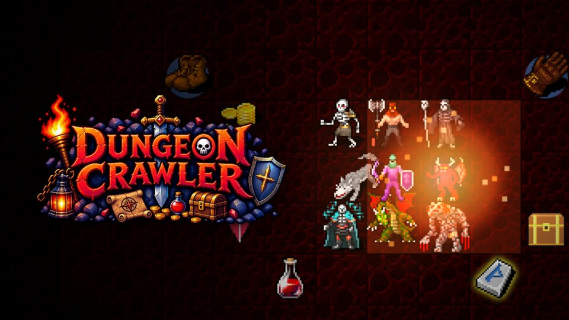
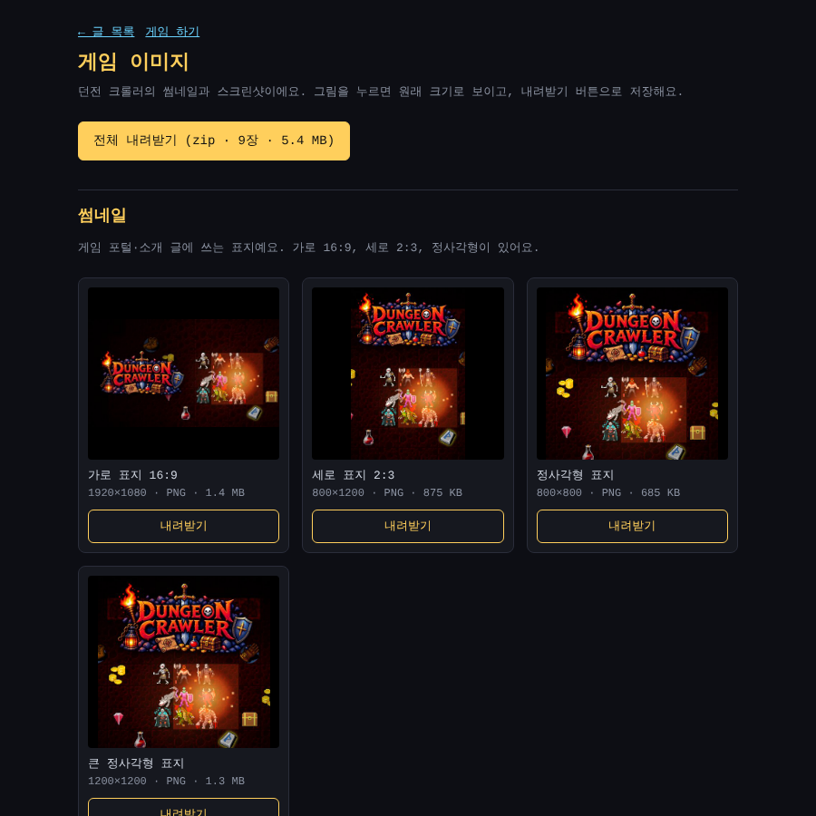
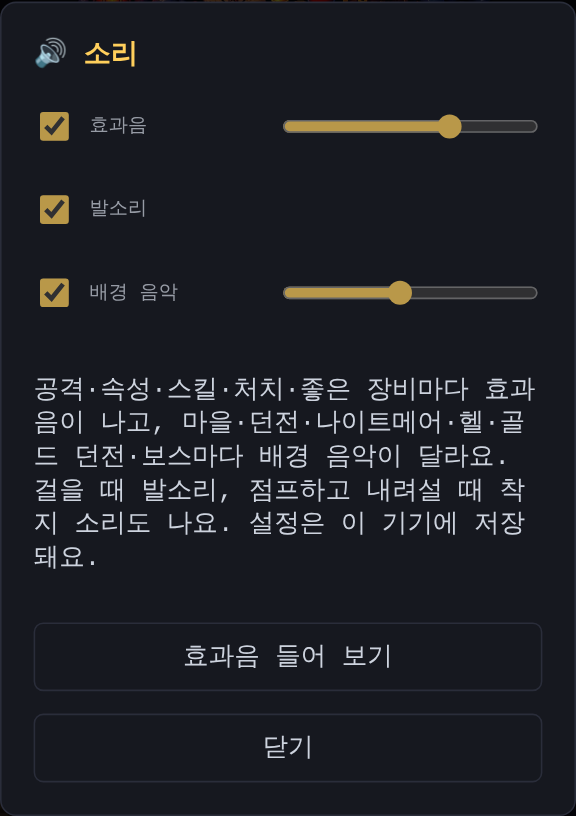
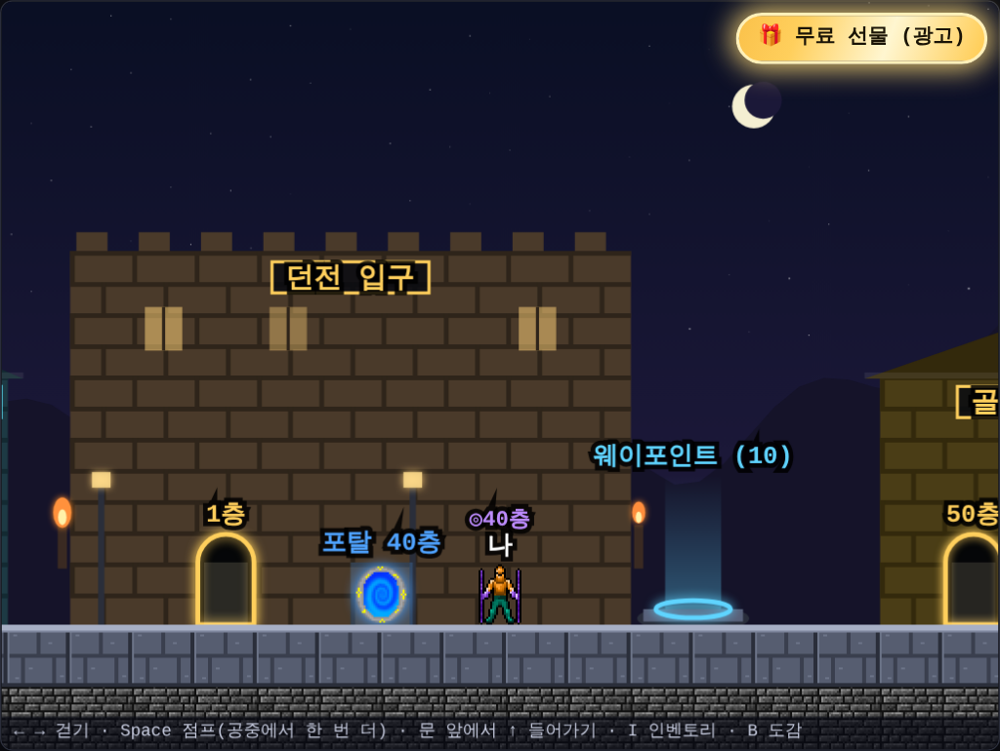
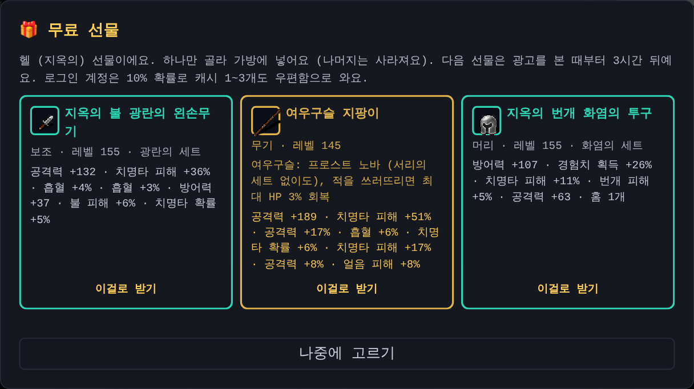
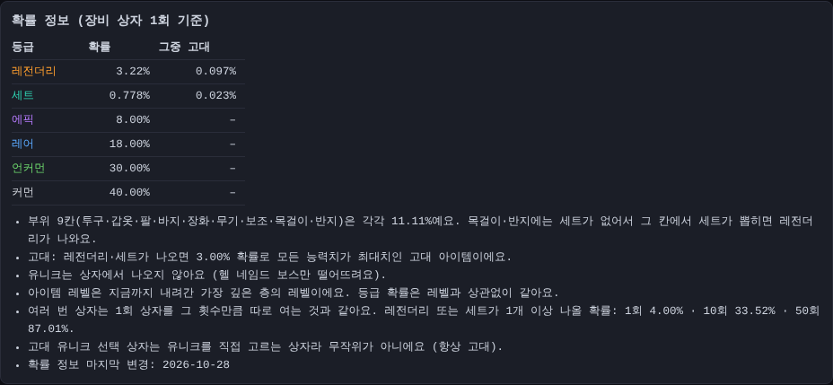
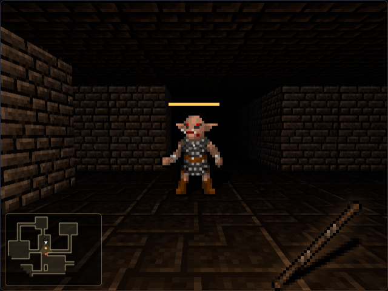
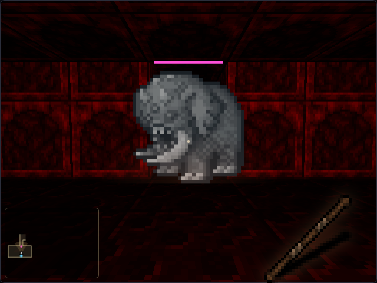
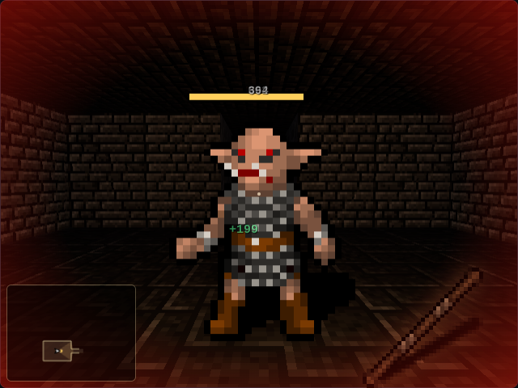
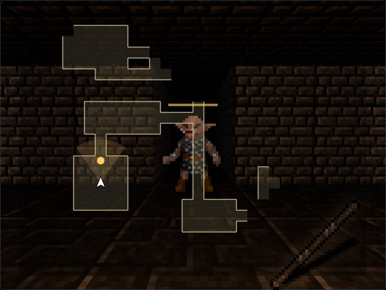

3D 화면 시험판, 상자 확률 공개, 무료 선물, 그리고 자동 테스트
어제 던전 크롤러를 Poki·CrazyGames 같은 게임 포털에 올릴 수 있게 혼자 하는 HTML5 버전을 만들었어요. 그런데 포털에 게임을 등록하려면 게임 파일만으로는 부족해요. 게임 목록에 보일 표지(썸네일), 게임 화면 캡처, 소개 글과 조작법도 필요해요.
표지는 실제 게임 화면으로
표지를 새로 그리지 않고, 게임을 실제로 띄워서 가장 멋진 순간을 찍기로 했어요.
- 헬 던전 10층에 넓은 방을 만들고, 화염의 세트를 입은 플레이어를 가운데 세웠어요
- 둘레에 데몬·리치·미노타우르스 같은 몬스터 여덟 마리, 바닥에는 금화·보물 상자·보석·룬·물약을 깔았어요
- 제자리에서 몇 턴 기다리면 세트 스킬 화염구가 터지는데, 바로 그 순간을 4배 크기로 찍었어요
- 그 위에 게임 로고를 얹어 가로(16:9), 세로(2:3), 정사각형 표지를 만들었어요

처음 찍은 그림에는 피해 숫자가 겹쳐서 지저분했고, 몬스터에게 맞은 플레이어가 붉게 번쩍이기도 했어요. 그래서 표지에서는 숫자를 빼고, 몬스터는 때리지 않게 해서 다시 찍었어요. 바닥이 너무 어두워 밝기도 조금 올렸어요.
스크린샷과 소개 글
포털 화면 그대로 1280×720 크기로 다섯 장을 찍었어요: 마을, 헬 전투, 던전 탐험, 인벤토리, 몬스터 도감이에요. 포털은 전 세계 사람이 보니까 영어 화면으로 찍었어요.
소개 글은 영어·한국어·일본어로 썼어요. 한 줄 소개, 짧은 설명, 긴 설명, 조작법, 태그를 포털 입력 칸에 맞춰 나눴어요. 50층, 5층마다 보스, 룬 14개, +12 강화 같은 숫자는 게임 코드에서 직접 확인했어요.
블로그에서 보고 내려받기
같은 그림을 블로그에서도 볼 수 있게 게임 이미지 페이지를 새로 만들었어요.
- 썸네일 4장과 스크린샷 5장을 작은 미리보기로 보여 줘요
- 그림을 누르면 원래 크기로 열리고, 장마다 내려받기 버튼이 있어요
- 위쪽의 전체 내려받기를 누르면 9장을 zip 하나로 받아요
- 블로그 첫 화면과 모든 글 아래쪽에 링크를 달았어요

원래 그림은 장마다 1MB가 넘어서 그대로 보여 주면 페이지가 무거워요. 그래서 페이지에는 작은 미리보기를 쓰고, 원래 크기는 누르거나 내려받을 때만 받게 했어요.
걸을 때 '톡톡' 발소리
소리를 넣은 뒤로 공격·스킬·점프에는 소리가 났는데, 정작 걸을 때는 조용했어요. 그래서 마리오 같은 8비트 발소리를 만들었어요.
- 짧게 떨어지는 네모파에 작은 흙 소리를 섞은 '톡' 소리예요. 왼발과 오른발 높이를 조금 다르게 해서 걷는 느낌이 나요
- 마을 돌길은 밝게, 던전은 낮고 둔하게 들려요
- 던전에서는 빈 칸으로 한 칸 걸을 때마다 나요. 몬스터에게 부딪혀 공격할 때는 나지 않아요
- 마을에서는 땅을 한 칸 걸을 때마다 나고, 공중에서는 쉬어요. 점프하고 내려서면 '툭' 하는 착지 소리가 나요
- 던전 점프(Space + 방향)에도 이제 뛰는 소리와 착지 소리가 있어요
계속 걸으면 발소리가 귀찮을 수도 있어서, 소리 설정에 "발소리" 켜기·끄기를 따로 넣었어요. 발소리만 꺼도 다른 효과음은 그대로 나요.

포털 버전의 업데이트 안내는 숨겼어요
포털 버전에서 한 번 해 본 사람이 다시 들어오면, 원래 사이트 사람들에게 보여 주던 긴 업데이트 안내가 위쪽에 뜰 수 있었어요. 포털 버전은 혼자 하는 버전이라 맞지 않는 내용이 많아서, 포털에서는 띄우지 않게 고쳤어요.
3시간마다 무료 선물
지금은 광고를 보지 않아도 게임을 끝까지 할 수 있어요. 그래서 광고는 "보면 좋은 것"으로 만들기로 했어요. 3시간마다 광고 한 편을 보면 세트·유니크 아이템 3개를 보여 주고, 그중 하나를 골라 가질 수 있어요.

- 받을 수 있을 때만 게임 화면 오른쪽 위에 "🎁 무료 선물" 배너가 반짝여요. 마을에서도, 던전에서도 보여요
- 배너를 누르면 광고가 나오고, 끝까지 보면 선물 3개가 나와요
- 하나만 고를 수 있고, 고르면 바로 가방에 들어가요. 나머지 둘은 사라져요
- 지금 고르기 어렵다면 "나중에 고르기"로 닫아 두세요. 배너가 "선물 고르기"로 남아서 광고를 다시 보지 않고 같은 3개를 볼 수 있어요

선물은 내 진행에 맞춰서
처음 하는 사람에게 최강 장비를 주면 파밍하는 재미가 없어지고, 깊이 간 사람에게 1층 장비를 주면 쓸모가 없어요. 그래서 선물은 내가 간 곳에 맞춰요.
- 일반 던전 중이면 일반 세트 아이템 (가장 깊이 간 층의 레벨)
- 일반 던전을 끝냈으면 "악몽의" 세트 아이템
- 나이트메어까지 끝냈으면 "지옥의" 세트 아이템, 그리고 헬에서 이미 만난 네임드 보스의 유니크가 섞여 나와요
유니크는 원래 헬 네임드 보스만 떨어뜨리는 최종 목표 아이템이라, 그 보스를 만나 본 사람에게만 나오게 했어요. 세트 세 개는 서로 다른 부위로 나와서 고르는 재미가 있어요.
가끔은 캐시도
계정으로 로그인한 사람은 선물을 고를 때 10% 확률로 캐시 1~3개를 보너스로 받아요. 캐시는 우편함으로 와요. 캐시는 계정에 들어가는 거라 게스트는 받을 수 없어요.
서버가 만들고, 고른 것만 인정
선물 아이템은 게임이 아니라 서버가 만들어요. 서버는 내가 고른 아이템만 기록하고, 랭킹과 거래소에서도 그것만 진짜 아이템으로 인정해요. 그래서 고르지 않은 두 개를 몰래 가져가거나 레벨을 속일 수 없어요. 서버도 같이 점검했어요.
포털(Poki·CrazyGames) 버전은 서버가 없어서 같은 규칙으로 이 기기에서 선물을 만들고, 3시간도 이 기기에 저장해요. 광고는 포털의 보상 광고를 써요.
테스트가 저절로 돌아요
이 게임에는 화면을 실제로 띄워서 확인하는 회귀 테스트가 80개쯤 있어요. 지금까지는 바꿀 때마다 Claude Code가 이걸 한 번에 다 돌렸는데, 컴퓨터 한 대에서 25분이 걸렸어요.
이제 GitHub Actions가 대신 돌려요.
- 코드를 올리면 GitHub가 테스트를 4조각으로 나눠 컴퓨터 4대에서 동시에 돌려요. 약 6분이면 끝나요
- 결과는 실행 화면에 표로 보이고, 실패하면 그때의 기록과 화면 캡처를 내려받을 수 있어요
- 가끔 타이밍 때문에 흔들리는 테스트는 한 번 더 돌려 보고, 통과하면 "재시도"라고 남겨요
- 머지하기 전에 이 자동 테스트가 통과했는지 꼭 확인하기로 작업 규칙도 바꿨어요
첫 실행에서 테스트가 하나도 빠짐없이 통과했어요.
장비 상자 확률을 공개했어요
캐시로 사는 장비 상자는 열어 봐야 뭐가 나올지 아는 아이템이에요. 한국에서는 이런 아이템을 팔면 나올 확률을 알려 줘야 해요. 그래서 상점에 확률 정보를 자세히 붙였어요.
- 등급마다 나올 확률과 그중 고대 아이템이 나올 확률
- 부위 9칸은 똑같이 11.11%씩
- 유니크는 상자에서 나오지 않는다는 것
- 상자를 10번, 50번 열면 세트나 고대가 하나라도 나올 확률
- 확률을 마지막으로 바꾼 날짜
게임 첫 화면 아래쪽에도 "장비 상자 확률" 링크를 달았어요.

원래 보여 주던 숫자가 조금 틀렸어요
정리하다 보니 상점에 "세트 1% · 레전더리 3%"라고 써 놨는데, 실제로는 조금 달랐어요. 목걸이와 반지에는 세트 아이템이 없어서, 그 칸에서 세트가 뽑히면 레전더리가 나오거든요. 그래서 실제 확률은 세트 0.778%, 레전더리 3.22%예요.
이제 상점에 보이는 숫자는 손으로 적지 않고, 상자를 여는 규칙에서 바로 계산해요. 그리고 자동 테스트가 상자를 30만 번 열어 보고 그 결과가 보여 주는 확률과 맞는지 확인해요. 규칙을 바꾸면 숫자도 같이 바뀌고, 어긋나면 테스트가 알려 줘요.
그런데 확률이 너무 낮았어요
확률을 표로 놓고 보니 문제가 보였어요. 캐시는 진짜 돈으로 사는 건데, 상자를 열면 열 번 중 일곱 번은 커먼이나 언커먼이 나왔어요. 이 게임은 돈을 쓰지 않아도 끝까지 즐길 수 있어서, 상자를 사는 사람은 정말 원하는 장비가 있는 사람일 거예요. 그런 사람에게 커먼을 주면 안 되겠죠.
그래서 상자를 바꿨어요.
- 이제 상자에서는 레전더리나 세트만 나와요. 레전더리 80.56%, 세트 19.44%예요
- 상자에서 나온 레전더리·세트는 10% 확률로 고대예요. 몬스터가 떨어뜨리는 것(3%)보다 세 배 넘게 높아요
- 부위와 세트 종류, 고대 여부는 여전히 운이에요. 원하는 게 안 나오면 상자를 다시 열어야 해요
- 이미 연 상자의 아이템은 그대로예요
이렇게 바꾸면 상자 10개를 열 때 세트가 하나 이상 나올 확률이 88.49%, 고대가 하나 이상 나올 확률이 65.13%예요. 위의 확률 정보 그림이 바뀐 확률이에요.
3D 화면 시험판: 다크앤다커처럼 1인칭으로
안드로이드 앱을 이야기하다가, 화면을 3D로 바꿔 보기로 했어요. 게임을 새로 만드는 게 아니라, 지금 게임은 그대로 두고 보는 화면만 다크앤다커처럼 1인칭 3D로요. 그리고 차례를 기다리는 턴제가 아니라 시간이 흘러가는 실시간으로요.

- 내 눈높이에서 던전을 봐요. 빛은 내가 든 횃불 하나라 조금만 멀어도 어두워요
- 벽·바닥·몬스터·아이템은 지금 쓰는 픽셀 그림을 그대로 써서, 옛날 던전 게임 같은 느낌이에요
- 헬 던전은 붉은 빛, 나이트메어는 보랏빛이에요
- 오른쪽 아래에는 지금 손에 든 무기가 보이고, 공격하면 휘둘러요

턴 대신 시간이 흘러요
예전에는 내가 한 칸 움직여야 몬스터도 한 칸 움직였어요. 3D 화면에서는 0.6초마다 저절로 시간이 흘러서, 가만히 있어도 몬스터가 먼저 다가오고 때려요.
- 키보드: W·S 앞뒤, A·D 옆걸음, 마우스(또는 ← →)로 둘러보기, 클릭이나 Space로 공격
- 휴대폰: 화면 왼쪽을 끌면 이동, 오른쪽을 끌면 둘러보기, 공격 버튼이나 화면 오른쪽을 톡
- 공격은 0.6초에 한 번이에요. 옆이나 뒤에 붙은 몬스터는 돌아서 때려요
- 맞으면 화면 가장자리가 붉게 번쩍여요
- 인벤토리나 상점 창을 열면 시간이 멈춰요

3D에서도 지도를 겹쳐 봐요
1인칭으로 보니 길을 잃기 쉬웠어요. 그래서 3D 화면 위에 지도를 겹쳐 보이게 했어요.
- 처음에는 왼쪽 아래에 작은 지도가 떠요
- Tab(휴대폰은 지도 버튼)을 누르면 화면 가운데에 크게, 한 번 더 누르면 꺼져요
- 가 본 곳의 벽 윤곽, 계단, 상점, 웨이포인트, 보이는 아이템과 몬스터가 나와요
- 나는 화살표로 보이고, 보는 쪽으로 옅은 시야가 펼쳐져요

규칙은 하나도 안 바뀌었어요
화면만 바뀌고 나머지는 모두 원래 게임 그대로예요. 몬스터, 아이템, 세트 스킬, 계단, 웨이포인트, 저장, 랭킹 모두 같은 코드가 처리해요. 그래서 2D로 하던 판을 3D로 이어서 할 수도 있고, 언제든 다시 2D로 돌아갈 수도 있어요.
게임 위쪽의 3D 화면 (V) 버튼으로 켜요. 아직 시험판이라 처음에는 꺼져 있어요. 3D 그림 프로그램(three.js)은 켤 때만 받아서, 2D로 하는 사람은 기다릴 필요가 없어요. 마을은 지금처럼 옆에서 보는 화면이에요.
다음에 할 것
- 포털 등록 화면에서 받는 크기를 확인하고, 다르면 그 크기로 다시 만들기
- 포털에 올리고 Poki·CrazyGames의 확인 도구로 광고와 플레이 알림 확인하기
- 구글 광고 승인이 나면 무료 선물 광고도 진짜 광고로 바꾸기
- 3D 화면 다듬기: 몬스터·장비를 3D 모델로, 휴대폰에서 확인
- 안드로이드 앱으로 만들어서 구글 플레이에 올리기